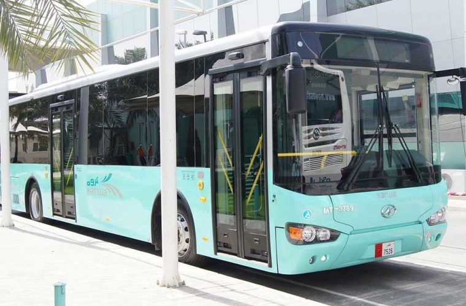

The bus network connects Hamad International Airport to various destinations across the city, offering a convenient transport option. Bus fare can only be paid with a Karwa Smartcard, available at HIA help desks near baggage claim belts 5 & 6. Qatar has done a lot for preparing for the world cup by making transport on buses easy. Therefore customers can easily travel to their desired stadium. People who have come to qatar to see the FIFA World Cup 2022 might not have a car, so they can use the bus to go to the nearest metro station, from whrere they can go to their station.
To know more, visit this website